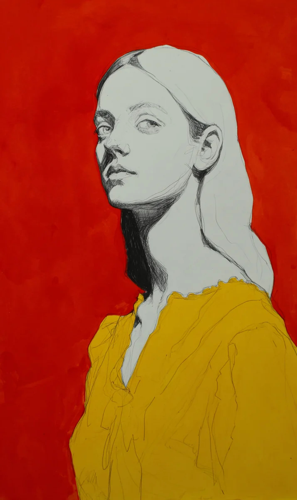

돌의 도시에는 이름이 없었다. 이름이란 잃어버리기 쉬운 것이었고, 이 도시의 거주민들은 무엇이든 잃는 법을 배우지 않은 채 수천 년을 살아왔기 때문이다. 광장 한가운데, 검붉은 석양 아래, 이끼라 불리는 한 조각상이 거울못 앞에 서 있었다. 손에는 그녀가 결코 가져서는 안 될 물건이 들려 있었다. 노란 천 한 자락이었다.
[The city of stone had no name. Names were easy to lose, and the inhabitants of this city had lived for thousands of years without ever learning how to lose anything. At the center of the square, beneath a crimson dusk, a statue called Moss stood before the mirror pond. In her hand was an object she was never meant to possess. A length of yellow cloth.]
이 세계에서 조각상들은 모두 벗은 채로 태어났다. 아니, 벗었다는 말조차 어울리지 않았다. 그들에게 피부란 화강암이거나 대리석이거나, 약간 더 불행한 경우엔 사암이었고, 그것 외에 다른 덮개를 상상하는 일은 마치 바다에게 공기를 권하는 것만큼이나 무례한 발상이었다.
[In this world, all statues were born unclothed. Or rather, the word “unclothed” did not quite fit. Their skin was granite, or marble, or in slightly more unfortunate cases, sandstone, and to imagine any other covering over that was a suggestion as rude as offering air to the sea.]
번식 또한 간결했다. 두셋, 때로는 대여섯의 조각상들이 모여 합의에 이르면, 각자 자신의 어깨나 발꿈치에서 작디작은 조각을 떼어냈다. 그 파편들을 모아 빚듯이 새로운 형체를 깎아내고, 완성된 석재 아기의 이마에 하나씩 파편을 심으면, 그 틈으로 빛 같은 것이 들어차 아이가 숨을 쉬기 시작했다. 이끼는 자신의 왼쪽 귓바퀴에 깃든 희미한 틈을 손끝으로 더듬는 버릇이 있었다. 그 틈이 곧 자신을 낳은 어른들의 서명이었다.
[Reproduction, too, was simple. When two or three, sometimes five or six statues gathered and reached agreement, each would chip away a tiny fragment from shoulder or heel. They would gather the fragments, carve a new form as though kneading clay, and plant a fragment into the forehead of the finished stone infant one by one. Something like light would pour in through the seams, and the child would begin to breathe. Moss had a habit of tracing with her fingertip the faint fissure nestled in her left earlobe. That fissure was the signature of the elders who had made her.]
그리고 어느 가을, 인간들이 왔다.
[And then one autumn, the humans came.]
그들은 남쪽 구릉에서 조용히 솟아난 금속 구체를 타고 내려와, 광장 한 귀퉁이에 천막을 치고 좌판을 벌였다. 조각상들은 처음엔 그들이 아픈 줄 알았다. 온몸을 희한한 막 같은 것으로 감싸고 있었기 때문이다. 푸른 막, 붉은 막, 검은 막. 어떤 막은 발끝까지 내려왔고, 어떤 막은 허리께에서 뚝 끊어졌다. 원로 화강은 그 꼴을 보고 혀를 찼다. “가엾게도, 저들은 피부가 벗겨지는 병에 걸린 모양이군.” 이끼는 아무 말도 하지 않았다. 다만 막의 빛깔을 오래 바라보았다.
[They descended in a metallic sphere that rose silently from the southern hills, set up a tent in one corner of the square, and spread out their stalls. At first, the statues thought they were ill. Their whole bodies were wrapped in strange membranes of some sort. Blue membranes, red membranes, black membranes. Some membranes reached to the toes, some stopped abruptly at the waist. The elder Granite clicked his tongue at the sight. “The poor things. It seems they are afflicted with a disease that peels the skin.” Moss said nothing. She only stared long at the hues of the membranes.]
인간들 가운데 가장 목청이 크고 가장 웃음소리가 요란했던 상인은 오세라라는 이름을 가지고 있었다. 그녀는 열흘도 지나지 않아 도시의 구조와 화폐와 가십과 날씨 이야기를 익혀버렸고, 자신이 가져온 상품의 이름을 조각상의 언어로 옮기기 시작했다. “이것은 옷이라 합니다,” 오세라가 유창하지는 않으나 충분히 큰 목소리로 외쳤다. “두 번째 피부. 마음을 입는 도구. 당신이 되고 싶은 당신을 당신 위에 두르는 발명품.”
[Among the humans, the merchant with the loudest voice and the most raucous laugh was named Se-ra Oh. In less than ten days she had mastered the city’s structure, currency, gossip, and weather-talk, and she began to translate the names of the goods she had brought into the language of the statues. “These are called ‘clothes,’” Se-ra cried, in a voice that was not fluent but loud enough. “A second skin. A tool for wearing one’s heart. An invention that drapes over you the you that you wish to become.”]
조각상들은 처음엔 웃었다. 그 다음엔 손가락질을 했다. 그 다음엔 몰래 찾아왔다.
[The statues laughed at first. Next they pointed. And then they came in secret.]
“두 번째 피부라니,” 한 중년 현무암이 오세라의 천막 뒤에서 속삭였다. “우리에게 첫 번째 피부로도 충분히 족한데.” 그러면서도 그는 짙은 감색 조끼를 만지작거리고 있었다. 오세라는 그의 어깨 두께를 재어주며 고개를 끄덕거렸다. 장사꾼이 가장 잘하는 종류의 끄덕거림이었다.
[”A second skin, indeed,” whispered a middle-aged basalt behind Se-ra’s tent. “The first skin is already more than enough for us.” And yet he was fiddling with a deep navy vest. Se-ra measured the thickness of his shoulder and nodded. It was the kind of nod merchants do best.]
이끼가 오세라의 좌판 앞에 처음 멈춰 선 것은 열두 번째 밤이었다. 그녀는 노란 로브 한 자락을 집어 들었다. 어쩐지 자신이 태어난 날 어른들이 지폈다던 불빛의 색과 닮아 있었다. “이것은 얼마에 팝니까.” 오세라는 눈을 가늘게 떴다. 장사꾼의 눈이었다. “로브라 부릅니다. 당신 어깨에서 떼어낸 한 조각이면 충분합니다.” 이끼는 망설였다. 어깨의 조각이란 자식을 만들 때나 떼어내는 것이었다. 그러나 그녀는 오늘 밤 도시의 어느 모퉁이에서 자신에게도 자식 아닌 무엇인가를 만들 권리가 있지 않을까 하고 생각했다.
[It was on the twelfth night that Moss first stopped before Se-ra’s stall. She picked up a length of yellow robe. For some reason it resembled the color of the firelight the elders were said to have lit on the night she was born. “How much do you sell this for?” Se-ra narrowed her eyes. The eyes of a merchant. “It is called a robe. One chip from your shoulder will suffice.” Moss hesitated. A chip from the shoulder was something taken only when making a child. Yet she wondered whether, in some corner of the city tonight, she too had the right to make something that was not a child.]
그녀는 왼쪽 어깨에서 새끼손톱만 한 파편을 떼어내어 오세라에게 건넸다. 손끝으로 떼어낸 자리를 만져보니 그 어떤 기척도 남지 않았다. 다만 오래된 결처럼 미세한 틈 하나가 생겨 있을 뿐이었다. 이끼는 로브를 품에 안은 채, 거울못까지 오래도록 걸었다.
[She chipped off a fragment the size of a pinky nail from her left shoulder and handed it to Se-ra. When she touched the place where she had broken it, no sensation remained. Only a faint seam, like an old grain of stone. Moss walked, cradling the robe in her arms, all the way to the mirror pond.]
못 앞에서 그녀는 로브를 입었다.
[Before the pond, she put on the robe.]
그 순간을 묘사할 수 있는 조각상의 언어는 존재하지 않았다. 돌이 따뜻해지는 일은 있어도 돌이 간지러워지는 일은 없었던 까닭이다. 노란 로브는 이끼의 팔꿈치와 무릎, 그 어떤 정면도 아닌 부위에 이상한 간지러움을 안겼다. 그것은 수치였고, 장난기였고, 가벼움이었고, 무엇보다도 새로움이었다. 새로움이란 조각상들이 가장 모르던 감정이었다.
[There was no language among statues with which to describe that moment. Stone could grow warm, but stone had never grown ticklish. The yellow robe carried a strange tickle to Moss’s elbows and knees, places that faced no direction at all. It was shame, and mischief, and lightness, and above all newness. Newness was the feeling statues knew least.]
이끼는 거울못에 비친 자신을 보았다. 전에 본 것보다 덜 자신이었고, 동시에 더 자신이었다. 이 모순을 풀어낼 수 있는 이는 오세라였으나, 오세라는 이미 그 시각 오늘 밤의 매상을 세고 있었다.
[Moss looked at herself reflected in the mirror pond. She was less herself than before, and at the same time more herself. The only one who could have unraveled this paradox was Se-ra, but at that hour Se-ra was already counting the night’s earnings.]
다음 날 새벽, 도시는 경악으로 갈라졌다.
[By dawn the next day, the city was split by outrage.]
로브를 입은 이끼가 광장을 걸어갔기 때문이다. 본래라면 조각상 하나가 광장을 걷는 일은 지극히 평범한 일이었다. 그러나 조각상 하나가 자신을 덮은 채 광장을 걷는 일은, 화강이 삼백 년에 걸쳐 지은 시 가운데 한 편도 대비하지 못한 사건이었다. 화강은 분노로 귀를 한 번 떨어뜨릴 뻔했다.
[For Moss, wearing the robe, walked across the square. Ordinarily, a statue walking across the square was an utterly unremarkable event. Yet a statue walking across the square while covered was an event for which not a single one of the three hundred years’ worth of poems Granite had composed had prepared. Granite nearly dropped an ear in rage.]
원로 회의가 즉시 소집되었다. 오각형의 대청 한가운데에 이끼가 세워졌고, 네 방향에서 연로한 조각상들이 돌의 언어로 심판의 말을 쏟아냈다. 죄목은 단 하나였다. “스스로를 덮어 피부를 욕되게 한 죄.”
[A council of elders was convened at once. Moss was placed at the center of the pentagonal hall, and from four directions the aged statues poured out words of judgment in the language of stone. The charge was a single one. “The crime of covering oneself and defiling the skin.”]
“피부는 태어났을 때부터 우리의 이름이었고 우리의 기도였고 우리의 전부였다,” 화강이 외쳤다. “그 위에 천을 두르는 것은 우리의 조상들의 뺨에 재를 뿌리는 일이다.” 이끼는 고개를 숙이지 않았다. 다만 천천히 되물었다. “조상님, 우리의 피부는 어디서 왔는지 여쭈어도 될까요.” 대청에 침묵이 떨어졌다. “그것은 자명한 일이다. 우리의 어머니들과 아버지들이 떼어준 파편으로부터.” “그렇다면 피부 또한 덮개가 아니겠습니까. 단지 더 오래된 덮개일 뿐인.” 화강의 입이 돌처럼 굳었다. 이유는, 그의 입이 본래 돌이었기 때문이다.
[”Skin was our name from the day of our birth, it was our prayer, it was our everything,” Granite cried. “To drape cloth upon it is to scatter ashes upon the cheeks of our ancestors.” Moss did not lower her head. She only slowly asked back, “Elder, may I ask where our skin came from?” Silence fell upon the hall. “That is self-evident. From the fragments our mothers and fathers chipped off for us.” “Then is not skin also a covering? Merely a more ancient covering.” Granite’s mouth hardened like stone. The reason being, his mouth had always been stone.]
토론은 사흘을 끌었다. 결론은 예상된 바였다. 이끼는 자신의 왼쪽 어깨에서 다시 한 번 파편을 떼어내어 도시에 바친 뒤, 로브를 입은 채 인간들의 천막 너머, 남쪽 구릉의 바깥으로 추방되어야 했다.
[The debate stretched three days. The conclusion was as expected. Moss was to chip off another fragment from her left shoulder, offer it to the city, and, still wearing the robe, be banished beyond the humans’ tents, past the southern hills.]
그녀는 명령대로 했다. 파편을 떼어내는 일은 두 번째였기에 덜 놀라웠고, 오히려 덜 아팠다. 광장을 떠나기 전 이끼는 오세라를 돌아보았다. 오세라는 손을 흔들어주지 않았다. 대신 천막 뒤에서 또 다른 현무암에게 감색 조끼 값을 흥정하고 있었다.
[She did what she was told. Chipping off a fragment was the second time, so less astonishing, and oddly less painful. Before leaving the square, Moss looked back at Se-ra. Se-ra did not wave. Instead, behind the tent, she was haggling over the price of the navy vest with another basalt.]
추방된 자가 걷는 길은 어디에나 있고 어디에도 없다. 이끼는 구릉을 넘어 오래된 마른 강바닥에 이르렀고, 바닥의 자갈 위에 로브를 벗어놓았다. 로브를 벗는 순간, 그녀는 비로소 자신에게 돌아가고 싶었다. 덮개를 벗은 스스로의 피부를 손끝으로 확인하고 싶었다. 쾌락도 수치도 아닌, 확인이라는 이름의 순수한 경건함이었다.
[The path walked by the banished exists everywhere and nowhere. Moss crossed the hills and came to the bed of an old dry river, and laid the robe upon the gravel of its floor. The moment she removed the robe she at last wished to return to herself. She wished to verify, with her fingertips, her own uncovered skin. It was neither pleasure nor shame but a pure reverence that might be called verification.]
그녀는 고개를 숙여 자신의 어깨를 보았다.
[She bowed her head and looked at her own shoulder.]
그곳에는 돌이 없었다.
[There was no stone there.]
살이 있었다. 인간들과 똑같은, 부드럽고 따뜻하고 창피할 만큼 결이 고운 살. 그녀는 자신의 팔을, 가슴을, 허벅지를, 발등을 더듬었다. 모두 살이었다. 오직 왼쪽 어깨에, 두 번 파편을 떼어낸 자리 위로만, 얇은 돌 껍질이 나뭇잎처럼 매달려 바람에 달그락거렸다.
[There was flesh. Flesh just like the humans’, soft and warm and embarrassingly fine-grained. She ran her fingers over her arm, her breast, her thigh, the top of her foot. All flesh. Only on her left shoulder, over the place she had twice chipped, did a thin crust of stone hang like a leaf and rattle in the wind.]
이끼는 오래 웃었다. 조각상의 웃음은 본디 돌이 갈리는 소리를 내었으나, 이 밤 그녀의 웃음은 인간의 웃음과 구분되지 않았다. 웃음이 멎자 그녀는 로브를 다시 집어 입었다. 그리고 구릉의 꼭대기로 천천히 올라가 도시를 내려다보았다.
[Moss laughed for a long time. A statue’s laughter had always sounded like the grinding of stone, but that night her laughter could not be distinguished from a human’s. When the laughter stopped, she picked up the robe and put it on again. Then she climbed slowly to the top of the hill and looked down at the city.]
광장에는 화강이 서 있었다. 달빛 아래 그의 피부는 희고 단단했고, 그 아래로는, 아직 그 자신조차 모르는 어떤 온기가 조용히 잠들어 있었다. 이끼는 그 사실을 외치지 않기로 했다. 피부란 벗길 수 없는 것이 아니라, 벗겨지기 전엔 결코 알 수 없는 것이기 때문이었다.
[In the square stood Granite. Beneath the moonlight, his skin was white and hard, and beneath that, some warmth that he himself did not yet know was quietly sleeping. Moss decided not to shout this fact. For skin is not something that cannot be peeled; it is only something that cannot be known until it is peeled.]
그녀는 오세라의 천막 쪽을 향해 휘파람을 불었다. 오세라가 고개를 들었다. 이끼는 노란 로브 자락을 흔들었다.
[She whistled toward Se-ra’s tent. Se-ra raised her head. Moss waved the hem of the yellow robe.]
“다음 도시는 어디입니까.” 이끼가 물었다. 오세라는 웃었다. 장사꾼의 웃음이었고, 동시에 공범의 웃음이었다. 그녀가 손을 들어 북쪽을 가리키자, 이끼는 그 방향으로 걷기 시작했다. 걸음마다 로브 자락이 바람에 펄럭였고, 로브 속의 살은 따뜻했으며, 살 아래 어딘가에는 아직 누구에게도 발각되지 않은, 아주 작은 돌조각 하나가 조용히 떨리고 있었다.
[”Where is the next city?” Moss asked. Se-ra laughed. It was a merchant’s laugh, and at once the laugh of an accomplice. When she raised her hand and pointed north, Moss began to walk in that direction. With each step the hem of the robe fluttered in the wind, and the flesh beneath the robe was warm, and somewhere beneath the flesh, a very small chip of stone, yet undiscovered by anyone, trembled quietly.]